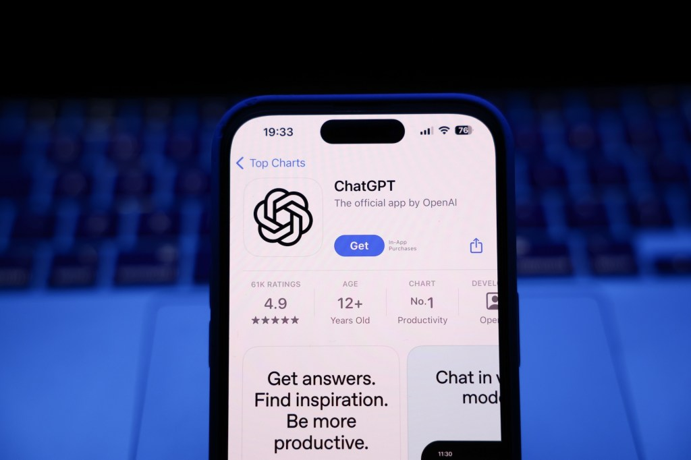
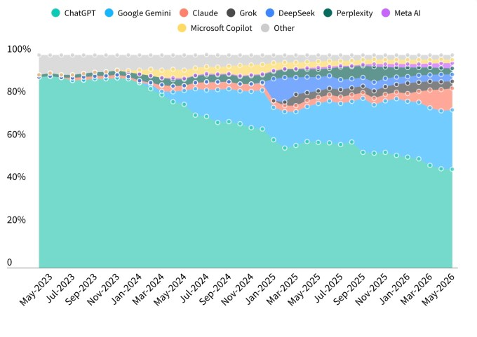
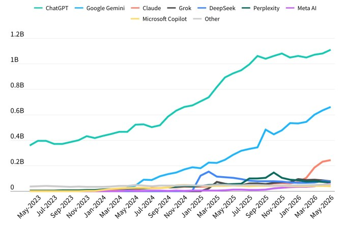
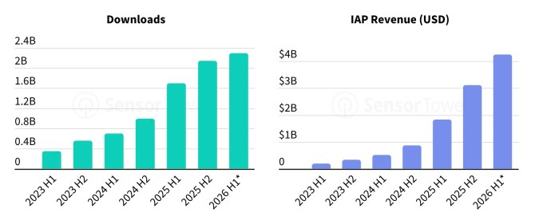
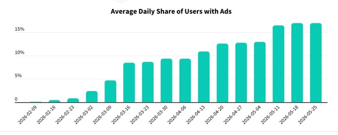

ChatGPT 점유율이 처음으로 50% 밑으로 내려갔습니다. 1월까지 50%를 넘던 점유율이 5월 말 46.4%였습니다.
빈자리는 제미나이(27.7%)와 클로드(10.3%)가 채웠습니다. 사용자는 앱 사이를 점점 더 쉽게 갈아탑니다.
클로드는 유료 전환율 13%로 업계 1위입니다. 시장의 무게추가 성장에서 수익화로 옮겨가고 있습니다.
점유율 1위 벤더에
전사를 베팅하셨습니까?
그 1위가 1년 만에 절반 아래로 내려갔습니다.
경영 리더가 AI 도구를 전사에 깔 때 보통 1위를 고릅니다. 가장 많이 쓰니 안전하다고 봅니다. 그런데 그 1위의 위상이 흔들립니다.
센서타워 집계로 ChatGPT 점유율이 처음으로 50% 밑으로 내려갔습니다. 사용자가 제미나이와 클로드로 갈아탑니다. 갈아타는 이유는 기능만이 아닙니다.
이 글은 AI 벤더를 고르고 거기에 묶이는 리더를 위한 것입니다. 1위 점유율 하나로 도입을 결정하면 왜 위험한지 다룹니다.
AI 어시스턴트는 이제 전 세계 수억 명이 씁니다. 경쟁 구도가 빠르게 바뀝니다. 단일 지배에서 다극 경쟁으로 넘어갑니다.
이 변화는 리더의 결정에 직접 닿습니다. 1위 벤더에 전사를 묶으면 점유율이 흔들릴 때 비용과 위험을 떠안습니다. 사용자는 예전보다 쉽게 갈아탑니다.
갈아타는 방아쇠는 기능만이 아닙니다. OpenAI의 국방부 계약 발표 직후 앱 삭제가 측정 가능하게 늘었습니다. 브랜드 신뢰와 가치관이 선택을 움직입니다.
첫째, 1위 점유율이 처음으로 50% 밑으로 내려갔습니다. 1월까지 ChatGPT는 50%를 넘는 점유율을 지켰습니다. 5월 말 46.4%로 떨어졌습니다. 제미나이가 27.7%, 클로드가 10.3%로 빈자리를 채웠습니다. ChatGPT 사용자 수 자체는 11억으로 사상 최대입니다. 점유율이 빠진 건 경쟁사가 더 빠르게 커졌기 때문입니다.

| AI 어시스턴트 | 월간 사용자(MAU) | 점유율 (5월 말) |
|---|---|---|
| ChatGPT (OpenAI) | 11억+ | 46.4% |
| Gemini (Google) | 6.62억 | 27.7% |
| Claude (Anthropic) | 2.45억 | 10.3% |
| Grok · Perplexity · DeepSeek · Meta AI 등 | 비공개 | 각 5% 미만 |
둘째, 사용자는 가치관으로도 갈아탑니다. 센서타워는 사용자가 어시스턴트를 더 자주 바꾼다고 봤습니다. 특정 사건이 이동을 키웠습니다. OpenAI의 국방부 계약이 2월에 알려지자 앱 삭제가 뚜렷이 늘었습니다. 기능만이 아니라 브랜드 신뢰가 선택을 움직인 것입니다.
성장의 결도 다릅니다. 제미나이는 구글 생태계 통합으로 사용자를 늘립니다. 클로드는 생산성 평판으로 자리를 잡았고, ChatGPT의 사용자 유지율을 바짝 따라붙었습니다.

셋째, 무게추가 성장에서 수익화로 옮겨갑니다. 2026년 상반기에 AI 앱 다운로드는 약 23억 건으로 추산됩니다. 지출은 42억 달러를 넘을 전망입니다. 2025년 상반기 18.3억 달러에서 크게 뛰었습니다. 다만 다운로드와 지출의 증가율은 둔화했습니다. 절대 수치는 늘어도 시장이 성숙기에 들어선 신호입니다.
수익화의 질을 보여주는 지표가 따로 있습니다. 클로드는 유료 구독 전환율이 13%로 업계 1위입니다. 어느 AI 사업이 지속 가능한 매출을 쌓는지 가를 숫자입니다. 전환율이 높은 벤더는 무료 정책을 급히 바꿀 이유가 적습니다. 리더 입장에서는 그만큼 도구가 오래갈 가능성이 큽니다.

넷째, ChatGPT는 광고로 수익화를 넓힙니다. OpenAI는 2월부터 ChatGPT에서 광고를 실험했습니다. 광고 수와 노출 사용자 비중을 차츰 키웠습니다. 5월에는 하루 사용자의 평균 17%가 광고를 봤습니다. 소프트웨어와 쇼핑이 가장 큰 광고주 영역입니다.
쇼핑 연동도 영향이 큽니다. ChatGPT는 타깃, 월마트, 코스트코로 추천 트래픽을 보냅니다. 크롤러를 차단한 아마존은 유입이 정체됐습니다. 그 틈에 월마트의 자체 AI 스파크가 존재감을 키웁니다.

핵심 업무는 한 벤더에 묶지 말고 갈아탈 수 있게 설계합니다. 프롬프트와 데이터를 특정 모델에 종속시키지 않습니다. 같은 업무를 두세 모델로 돌려 결과와 비용을 비교하십시오. (1시간)
우리 팀이 AI 어시스턴트에 맡기는 핵심 업무 5개를 적어 주세요. 각 업무마다 지금 쓰는 모델, 갈아탈 때의 전환 비용, 대체 모델 후보를 표로 정리해 주세요. 특정 벤더에 종속된 부분(프롬프트, 데이터, 연동)을 함께 표시해 주세요.
국방부 계약 한 건이 앱 삭제를 불렀습니다. 사용자와 직원은 브랜드 신뢰로도 움직입니다. 데이터 학습 정책과 보안 약관을 기능만큼 비중 있게 점검하십시오. (1시간)
ChatGPT는 광고를 늘리고 구독 수익화를 넓힙니다. 무료에 기댄 업무는 정책 변화에 취약합니다. 유료 전환과 광고 노출이 업무 흐름에 미칠 영향을 미리 따져 두십시오. (30분)
센서타워 추정치입니다. 외부 분석사의 추산이라 실제 수치와 다를 수 있습니다. 경향을 참고하되 단일 근거로 쓰지 마십시오.
측정 기준이 섞여 있습니다. 점유율은 월간 사용자(MAU) 기준이고, OpenAI 자체 발표는 주간 사용자(WAU)입니다. 기준이 다르면 숫자도 달라집니다.
점유율은 시점 기준입니다. 모델과 시장은 빠르게 바뀝니다. 한 시점의 점유율을 장기 전망으로 굳히지 마십시오.
지역 편차가 큽니다. 아시아는 1분기에 처음 다운로드가 줄었습니다. 시장마다 흐름이 다르므로 우리 시장 기준으로 다시 봐야 합니다.
AI 어시스턴트 시장은 단일 지배에서 다극 경쟁으로 넘어갑니다. 1위 점유율 하나에 전사를 묶지 말고, 갈아탈 수 있게 설계하고 가치관까지 평가하십시오.
MAU / WAU: 한 달(MAU) 또는 한 주(WAU) 동안 앱을 쓴 사용자 수입니다. 같은 서비스라도 기준에 따라 숫자가 달라집니다.
시장 점유율(Market Share): 전체 사용 중 특정 서비스가 차지하는 비중입니다. 여기서는 AI 어시스턴트 사용량 기준입니다.
유료 전환율(Paid Conversion): 전체 사용자 중 유료 구독으로 넘어간 비율입니다. 매출의 지속 가능성을 보는 핵심 지표입니다.
인앱 결제(IAP): 앱 안에서 구독이나 기능에 직접 지불하는 결제입니다. 앱 매출의 큰 축을 이룹니다.
- Mehta, I. (2026, June). ChatGPT's market share slips below 50% for first time [Article]. TechCrunch. (원문 보기 ↗)
- Sensor Tower. (2026). State of AI Report 2026 [Report]. Sensor Tower.